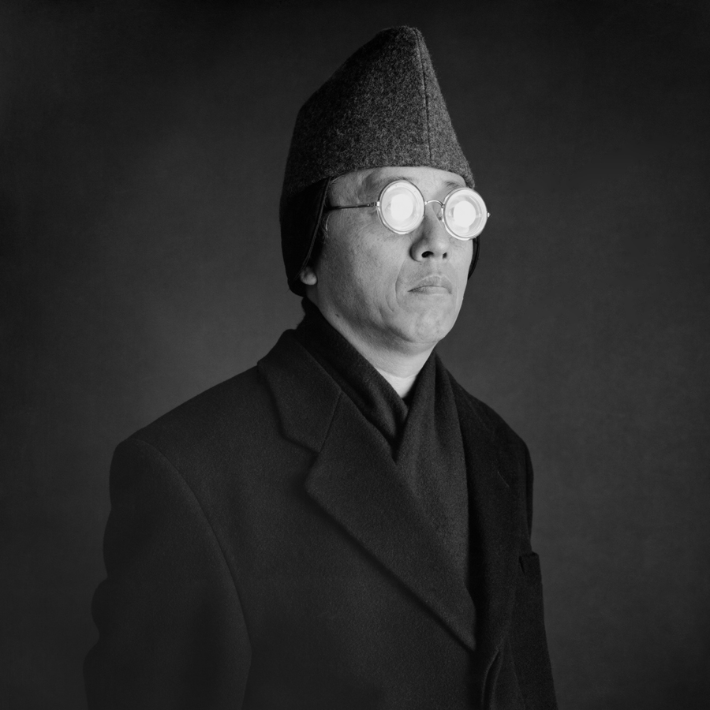

Hiroshi Sugimoto
is a contemporary Japanese photographer whose esoteric practice explores memory and time. Using the intrinsic quality of long exposure photography, the artist provides insight into how the medium can both obscure and alter reality. Influenced by Dadaist and Surrealist theory, Sugimoto’s Seascapes, Dioramas, and Theaters, craft mysterious scenes from vernacular subject matter. “Photography is like a found object. A photographer never makes an actual subject; they just steal the image from the world,” the artist said. “Photography is a system of saving memories. It's a time machine, in a way, to preserve the memory, to preserve time.” Born on February 23, 1948, in Tokyo, Japan, he graduated with a degree in sociology and politics from Rikkyo University in 1970. The artist went on to receive his BFA in photography from the Art Center College of Design in Los Angeles, before moving to New York in the mid-1970s.